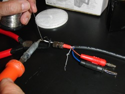
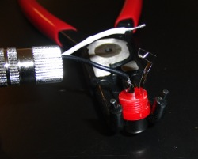
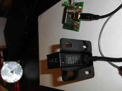
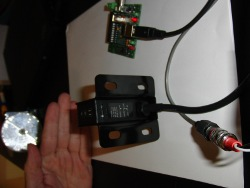

Connection of Velleman PEM10D photocell to Chronopic
Josep Ma Padullés, Xavier de Blas. Chronojump project. April 2009.
Description
We want to connect one or more
Velleman PEM10D photocells to the Chronopic.
Adventages of this photocell
- It's cheap (less than 70 euros in Spain)
- Response time (5-100 ms)
- Adjustable sensibility
- Input voltage AC-DC from 12 to 250V
- Relay output (pluggable to Chronopic)
- Being a known trademark, this product will be available long time on the market.
Instructions
- Velleman PEM10D photocell hsa 5 wires. Grey wire should be apart (unused), red and blue will be connected to alternating current connectors (see photo), finally black and white cables will be connected to RCA female.

- Connecting to RCA female

- Connecting to alternating current, and to Chronopic using an RCA male-male cable

- Circuit opened, Chronopic green light (D1) is ON

- Circuit closed, Chronopic green light (D1) is OFF

- Measuring time between two photocells connected to a single Chronopic using an RCA adaptor. Also a contact platform and a photocell can be connected. Just use your imagination.

In order to avoid problems with the movement of legs and arms on a run, we recomend you to put the photocells at head height, or to join some photocells vertically and create a connection that only closes circuit when ALL are closed.
Discuss this information on the forum:
Connectiong photocells Velleman PEM10D to the Chronopic (Chronojump forum).
Josep Ma Padullés, Xavier de Blas.


{kind=link}
{kind=link}
{kind=link}
{kind=link}